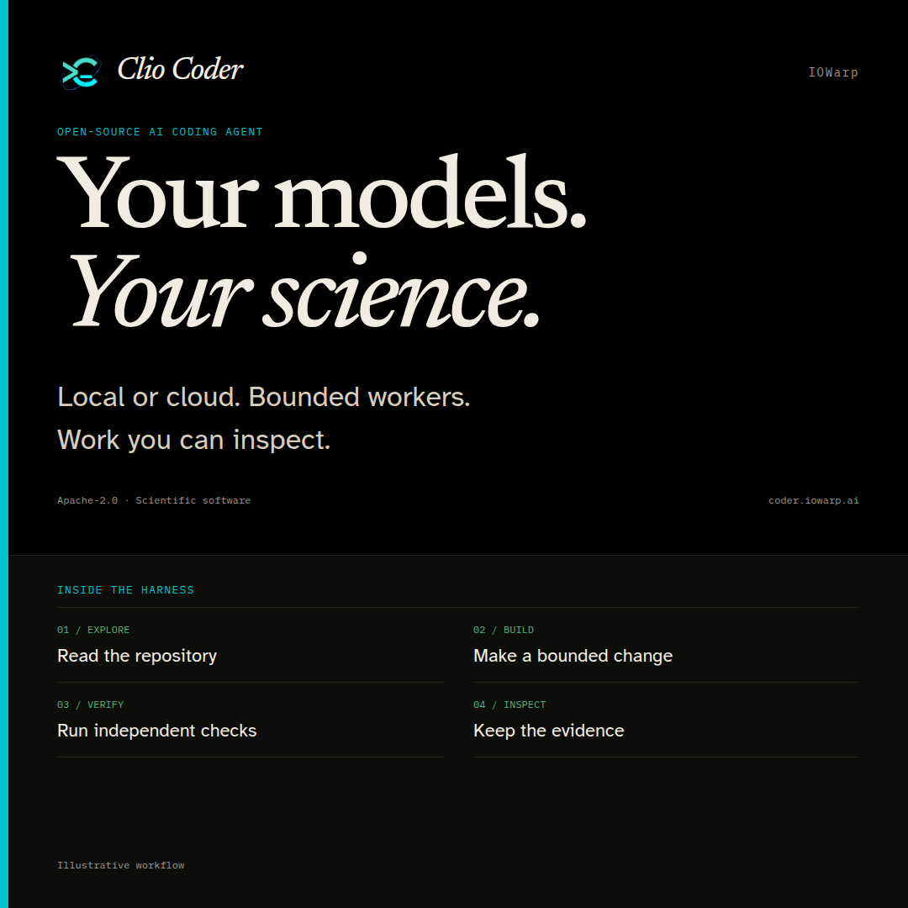
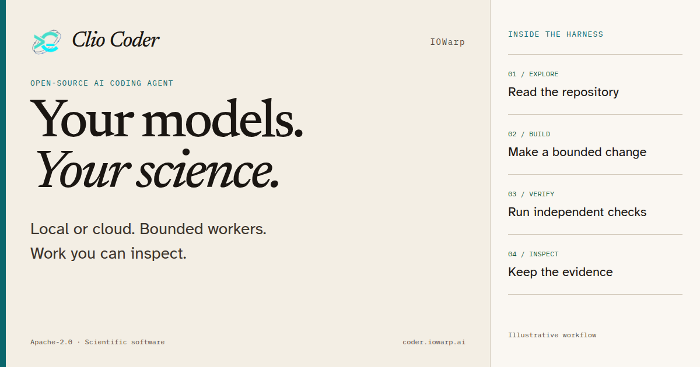
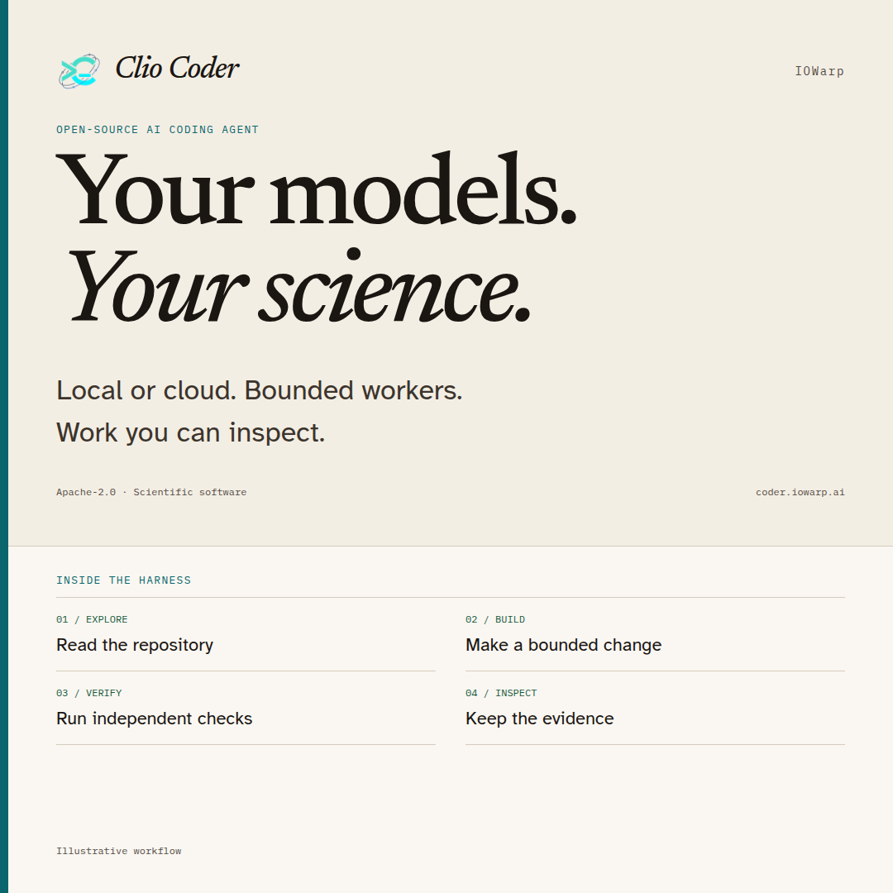

The thesis
The model is not the product. The harness is. Clio Coder is an open coding harness for scientific software. Your models. Your machines. Work you can inspect.
IOWarp · Clio Coder · field instrument
Issue 0.5.6Share kitDo not overclaimDark and light card pairs
For the timeline
X crops a link to about 1.91:1 and compresses the type. These cards are built for that crop: safe margins, dark-first default with a light pair, and type designed to survive compression. The copy is short enough to leave room for the link, and honest enough that a scientist will not flinch.
Before the domain resolves. A link to coder.iowarp.ai will not unfurl until the domain is live and DNS resolves. Attach the square card, paste a post, and put the GitHub URL in the reply if you need a working link today. After the site is live, post https://coder.iowarp.ai alone. The wide card is what the link becomes.
Pure black canvas, crisp Newsreader type, cyan mark, and an inspectable run receipt.


Warm paper background (#f3eee4), ink (#1a1612), botanical sage, and instrument cyan.


Open in X pre-fills the composer. It does not post for you.
The thesis
The model is not the product. The harness is. Clio Coder is an open coding harness for scientific software. Your models. Your machines. Work you can inspect.
The contrast
Most coding agents rent you a loop you cannot read. Clio Coder publishes the loop. It can also put Claude Code or Codex to work, then seal a receipt.
The proof
Built for the code science runs on. A local model. A failing numerical test. A two-line fix. A receipt that says what was checked, and what was not.
Image alt text, if X asks: “Clio Coder. The harness you can open. Your models. Your machines. Work you can inspect.”
Seven posts. Post 1, then reply to yourself. Do not dump them as one block.
1/ The model is not the product. The harness is. 2/ Vendor coding agents assume a frontier model and a shell you trust. Clio Coder assumes the model might be on your own machine, and that you will want to check the work tomorrow. 3/ Safety is code, not a prompt. Yolo does not outrank damage-control rules or protected paths. Every worker stays at default, even if the session does not. 4/ A run seals a receipt. Trust is five axes, not a score. Unknown is a state. A passing check is not scientific truth. 5/ It can delegate to Claude Code, Codex, OpenCode, or Pi. The same library can be installed back into those agents. Compose them. Do not be rented by them. 6/ Experimental 0.5.6. Terminal-first. The GUI is an alpha. It is not an OS sandbox. Windows is best effort. Self-edit gate deferred. Apache-2.0. Built at Illinois Tech, part of IOWarp, supported by NSF Award 2411318. 7/ npm install -g @iowarp/clio-coder https://coder.iowarp.ai
Do not claim a local model writes better code than Claude Code or Codex. It often will not. Those are closed frontier model products. Clio Coder is an open harness that can drive those agents. The post that travels in this audience is the one that respects that fact and names the harness.
Do not call the other tools inferior. Say they are closed. Say this one can drive them. Say the receipt stays when the model changes.
Do not hide the status. Experimental 0.5.6, terminal-first, GUI alpha, not an OS sandbox, Windows best effort, self-edit gate deferred. A reader who discovers the caveat in the docs will not share the next post.